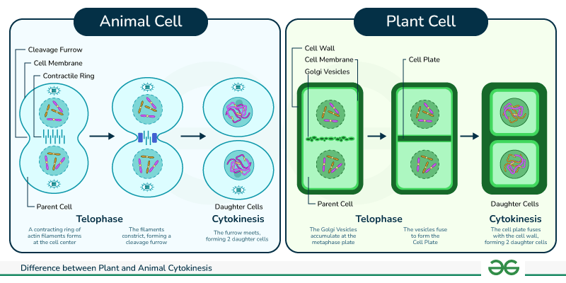
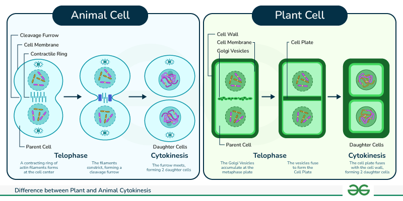

V. 생식과 유전
세포 분열과 염색체
학습 목표
- 염색체와 유전자의 관계를 설명할 수 있다.
- 체세포 분열의 특징을 염색체의 행동으로 설명할 수 있다.
생각 열기
분열 전인 세포와 분열 중인 세포의
차이점은 무엇일까?
생명 현상의 기본, 세포 분열
모든 생물은 세포로 이루어져 있으며, 생명 활동을 위해 세포는 분열합니다. 체세포 분열은 생물의 성장 과 손상된 부분의 회복(재생) 에 필수적인 과정입니다.
염색체 (Chromosome)
정의
분열 중인 세포에서 유전 물질이 꼬이고 뭉쳐서 만들어진 막대 모양의 구조물입니다.
구조
두 개의 염색 분체 가 중앙의 동원체 에 의해 연결된 구조입니다.
DNA와 유전자
DNA (디옥시리보핵산)
생명의 모든 유전 정보를 담고 있는 설계도입니다. 두 가닥이 서로 꼬여있는 이중 나선 구조 를 하고 있으며, 이 구조 안에 유전 암호가 저장되어 있습니다.
유전자 (Gene)
DNA의 특정 구간으로, 눈 색깔, 키 등 생물의 특정 형질을 결정하는 하나의 정보 단위 입니다. 염색체에는 수많은 유전자가 배열되어 있습니다.
염색체 수의 특징
같은 종의 생물은 체세포에 동일한 수의 염색체를 가집니다. 보통 짝을 이루고 있어 2n 으로 표기합니다.
예: 사람의 체세포에는 23쌍, 총 46개의 염색체가 있습니다 (2n=46).
체세포 분열 (Mitosis) 개요
생물의 몸을 구성하는 체세포가 두 개의 딸세포로 나뉘는 과정으로, 핵 분열 과 세포질 분열 로 이루어집니다. 핵심은 분열 후에도 염색체 수가 모세포와 동일하게 유지된다는 것입니다 (2n → 2n).
세포 주기 (Cell Cycle)
세포의 일생을 세포 주기라고 하며, 분열을 준비하는 간기 와 실제 분열이 일어나는 M기(분열기) 로 나뉩니다. 대부분의 시간(약 90%)은 간기에 해당합니다.
간기: 분열을 위한 준비
- 세포 주기 중 가장 긴 시기입니다.
- 세포가 성장하고 생명 활동을 합니다.
- 가장 중요한 사건은 DNA 복제 입니다. 이로 인해 각 염색체는 두 개의 염색 분체를 갖게 됩니다.
핵 분열 과정 영상
단계를 선택하세요
버튼을 클릭하면 해당 단계의 영상이 재생됩니다.
세포질 분열
동물 세포
세포막이 바깥에서 안으로 오므라들며 두 개로 나뉩니다 (세포질 만입).
식물 세포
세포 중앙에서 세포판 이 만들어져 바깥으로 자라면서 두 개로 나뉩니다.
 

양파 뿌리 끝 세포 관찰
세포 분열이 활발한 양파 뿌리 끝 생장점 을 이용하면 체세포 분열의 여러 단계를 직접 관찰할 수 있습니다.
1. 고정 (클릭)

양파 뿌리 끝 약 1cm를 잘라 에탄올과 아세트산 혼합 용액(3:1)에 넣어 세포 분열을 멈추고 살아있을 때의 모습을 유지시킵니다.
2. 해리 (클릭)
묽은 염산에 뿌리 끝을 넣고 가열하여 세포벽을 연하게 만들어 세포들이 잘 분리되도록 합니다.
3. 염색 (클릭)

아세트산 카민과 같은 염색 용액으로 핵과 염색체를 붉게 염색하여 관찰이 쉽도록 합니다.
4. 분리 및 관찰 (클릭)
염색된 뿌리 끝을 해부침으로 잘게 찢고 압착하여 세포를 한 겹으로 편 뒤 현미경으로 관찰합니다.
핵심 정리
- 체세포 분열 결과, 모세포와 유전 정보가 동일한 두 개의 딸세포 가 만들어집니다.
- 염색체 수에는 변화가 없습니다 (2n → 2n) .
- 체세포 분열은 생장 과 재생 에 중요한 역할을 합니다.
다음 시간에 배울 내용
V. 생식과 유전 - 생식 세포가 만들어지는 과정인 감수 분열